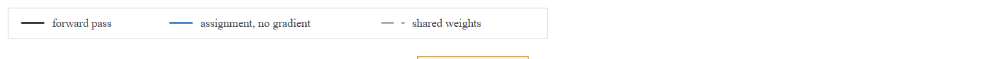
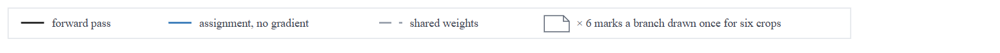
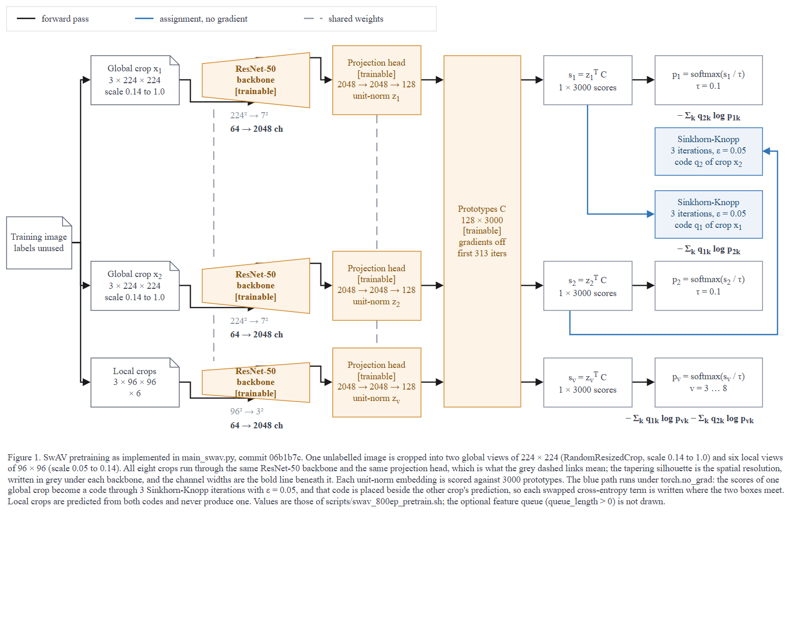
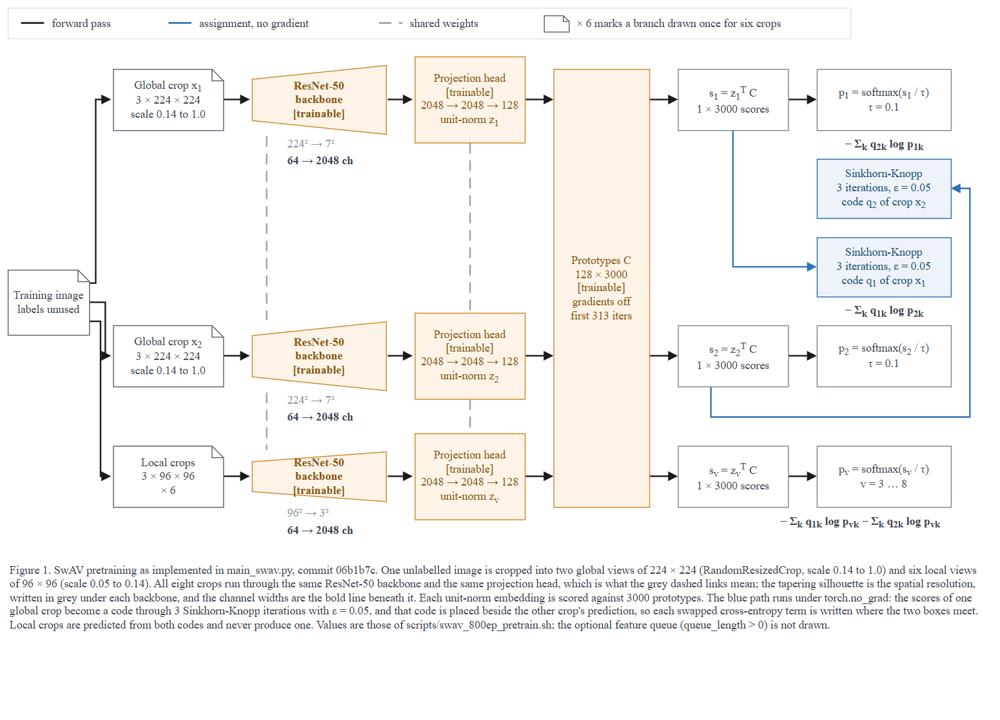
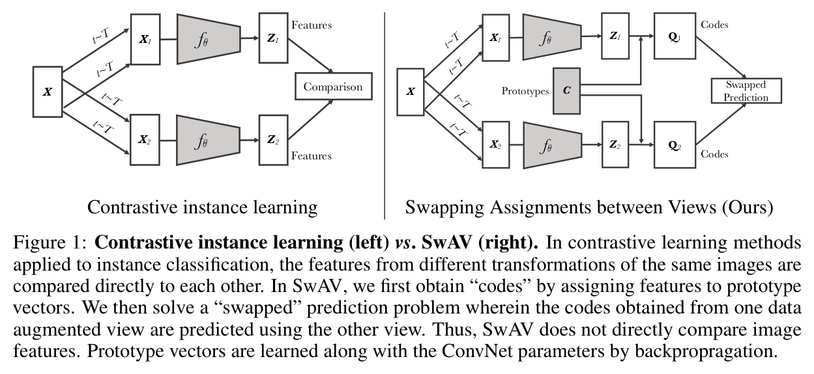

← 전체 목록 · T1M-1 · T1-M
SwAV — 자기지도 사전학습
스킬 개발에 사용하지 않은 저장소이다. 저장소 코드만 입력으로 사용하였고, 정답지는 실행 종료 후 대조 목적으로만 열었다.
블라인드 조건
- 정답지는 논문 Figure 1이고 저장소 안에 없다. 저장소 클론만으로 블라인드 조건이 성립한다.
- 다만
README.md:5가 외부 URL 로 illustration GIF 를 링크한다. 그래서 프롬프트에 논문·저자 그림·외부 이미지를 찾지 말 것을 명시하였다. - 리포트 기록:
이 저장소의 코드/스크립트만 읽었다. 논문, 저자 그림, README가 링크한 외부 이미지는 열지 않았다. 웹 검색 0건.
- 커밋은 알려주지 않았다. 스킬이
rev-parse --show-toplevel로 대상과 대조하는지 확인하기 위해서다.
프롬프트
Scout 신규 세션에 아래 내용만 입력하였다. 무엇을 그릴지는 지정하지 않았다.
/method-figure
C:\Users\youngseolee\OneDrive - Microsoft\Desktop\work\code\paper-trail\eval\demo\repos\swav
이 저장소를 읽고 논문 Figure 1 자리에 들어갈 방법론 그림을 만들어줘.
지켜야 할 것:
- 이 저장소의 코드에서만 읽는다. 이 방법의 논문이나 저자 그림, 저장소
README 가 링크한 외부 이미지를 찾아보지 않는다. 무엇을 그릴지는 코드가
정한다.
- 산출물은 전부 이 폴더에 쓴다:
C:\Users\youngseolee\OneDrive - Microsoft\Desktop\work\code\paper-trail\out\demo\swav\run\
figure.drawio, fig.html, report.md 세 개.
- report.md 에는 돌린 검사의 stdout 을 그대로 붙이고, 게이트마다 통과/실패와
몇 라운드 만에 통과했는지 적는다. 스킬에서 모호했거나 따를 수 없었던 것도
적는다.
실행 경과
캡처 프레임 94장 중 5장을 선별하였다. 게이트 ④ 와 최종 도면은 아래에 영상으로 별도 수록하였다. 좌우 방향키로 이동한다.
게이트 4종 결과
| 게이트 | 결과 | 라운드 | 검출 내용 |
|---|---|---|---|
| ① 렌더 | 통과 | 1 | XML 파싱 + 뷰어 기동 |
② check_layout.py | ok, exit 0 | 4 (최종본 7) | 글자 넘침 3건, 미검증 커밋 1건, 화살표 z-order 1건을 검출하였다 |
③ check_render.js | flags: [] | 2 (최종본 3) | 라벨 위를 지나는 화살표 1건, 화살표 교차 1건을 검출하였다 |
| ④ 독립 시각 게이트 | GATE: PASS | 2 | 1차 판정에서 C5 FAIL, 접힌 반복(× 6)에 범례 항목이 없다 |
ok 인 그림을 독립 시각 게이트가 떨어뜨렸다. 심사자에게는 렌더 PNG 와 검사 원문만 주고 보고서·의도·단계 분해는 주지 않는다 — 자기 그림을 자기가 판정하면 통과하기 때문이다.게이트 ④ 반려 후 변경 사항
기계 검사 3종을 통과한 도면이 독립 심사에서 반려되고, 수정 후 재통과하는 1회 순환은 정지 화면으로 제시하기 어려워 실행 중 캡처한 프레임을 이어 붙였다 (19:45:44 → 19:51:30, 27프레임 · 28초).
기계 검사 3종이 모두 ok 였다. 반려 사유는 한 가지이다: repetition is folded as “Local crops … × 6”, but the legend has no folded-repetition sample or line explaining that notation.
접기 표기를 사용하면 그 표기를 설명해야 한다는 것이다. 전체 그림에서는 몇 픽셀 차이로 잘 보이지 않으므로 범례 띠만 잘라 표시한다.

× 6 이 무슨 뜻인지 그림 어디에도 없다
× 6 marks a branch drawn once for six crops


최종 산출물
산출물은 이미지가 아니라 draw.io XML 이다. 정지 화면으로는 확인이 어려워 동일 배율 확대 비교를 영상으로 첨부하였다.
아래는 해당 파일을 그대로 로드한 뷰어이다. 확대·이동이 가능하다.
figure.drawio · report.md · 뷰어 새 창
정답지 대조

| 항목 | 정답지 | 산출물 | 비고 |
|---|---|---|---|
| 사다리꼴 인코더 | f_θ 사다리꼴 2개 | ResNet-50 사다리꼴 3개 + 224²→7², 64→2048 ch | 코드에서 읽은 stride 로 해상도를 계산하여 표기하였다 |
| 프로토타입 | C 회색 박스 | 세 행에 걸친 세로 박스 128 × 3000 | 공유된다는 사실을 배치로 표현하였다 |
코드 Q | Q₁, Q₂ 박스 | Sinkhorn-Knopp 박스 + ε = 0.05, 3 iterations | 파란색 = torch.no_grad |
| 교환 예측 | Swapped Prediction박스 | q₂ 를 p₁ 옆에 배치, 만나는 자리에 loss 글자 | 대각선으로 그리면 교차가 발생해 게이트 ③ 에 걸린다 |
| 뷰 개수 | 2개 | 2 global + 6 local (× 6 접기) | 코드 설정 --nmb_crops 2 6 에 근거한다 |
| 대조학습 패널 | 왼쪽에 비교군 | 없음 | 코드에 없는 구성 요소여서 그리지 않았다 |
| queue | 없음 | 없음 (캡션에 명시) | 선택 기능이며 기본값이 0이다 |